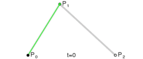
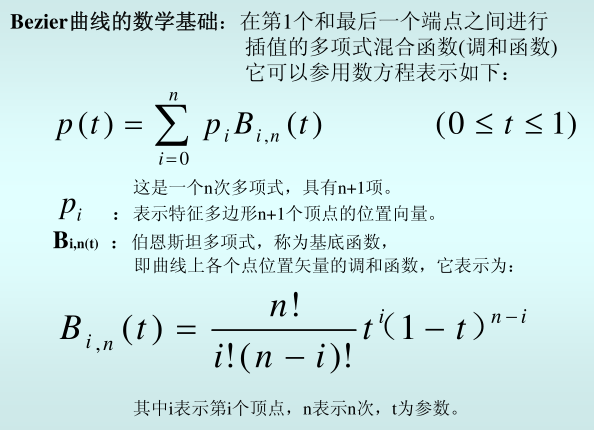
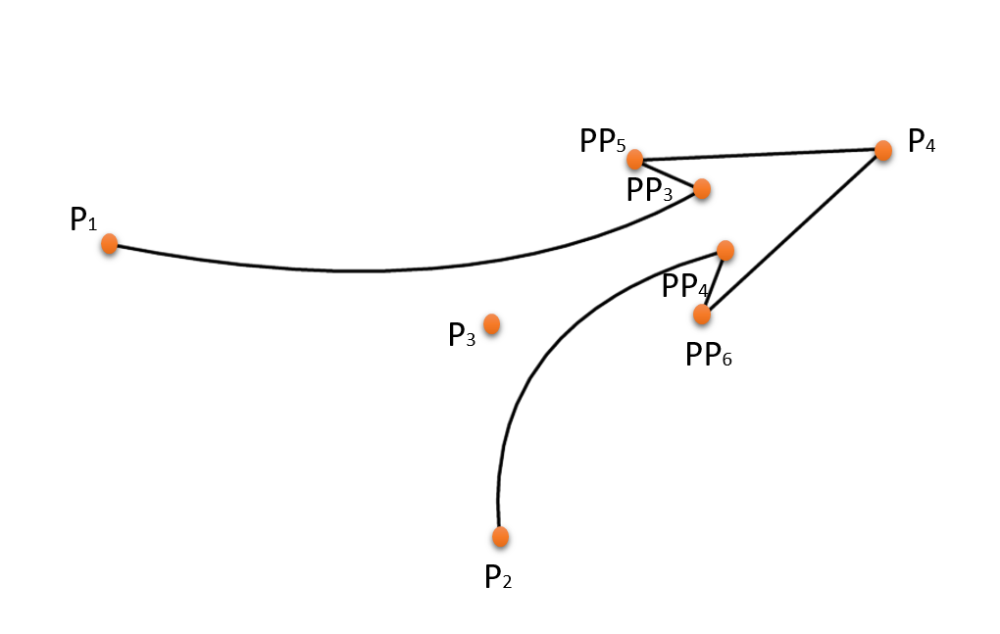
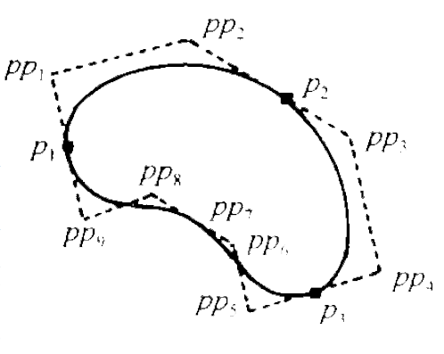

测量距离
测量面积
|
矩形选择
圆形选择
|
可拖动 |
在线地图
离线地图
地图导出
|
关闭
新增点对象
刷新当前点
画连续折线
开始
停止
清除
随机画二阶曲线

B(t)=(1-t)
2
P
0
+2t(1-t)P
1
+t
2
P
2
,t∈[0,1]
随机画三阶曲线
B(t)=(1-t)
3
P
0
+3t(1-t)
2
P
1
+3t
2
(1-t)P
2
+t
3
P
3
,t∈[0,1]
清除

画箭头线
清除

随机生成点画多边形
随机画一个
清除
随机画一个圆
半径：
画一个圆
清除
画集结地域
清除

画点
画折线
画多边形
画圆形
画正方形
画矩形
清除
Google电子地图
Google地形图
Google卫星地图
腾讯soso电子地图
腾讯soso地形图
腾讯soso卫星地图
百度电子地图
百度卫星地图
高德电子地图
高德卫星地图
天地电子地图
天地卫星地图
arcgis瓦片电子地图
arcgis瓦片卫星地图
Sqlite数据库电子地图
Sqlite数据库卫星地图
机场
港口
仓库
加油站
自来水厂
企业
车辆
宾馆
餐饮
高速收费站
加油站
交通灯
银行
医院
兴趣点